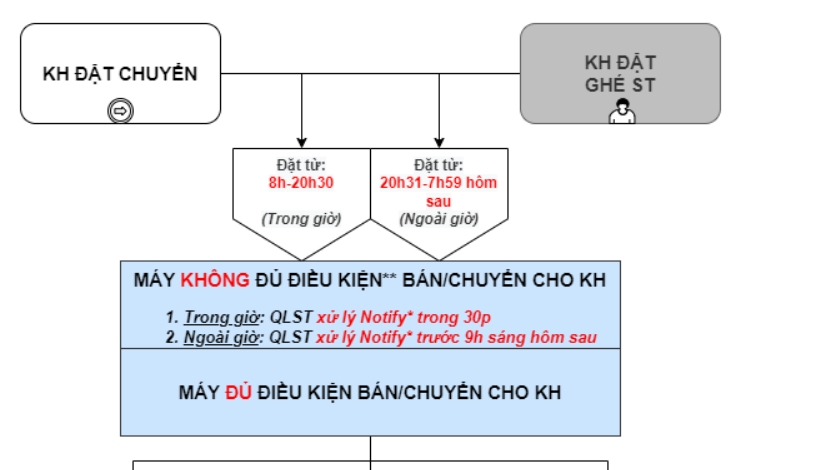

Nếu đơn hàng TG ALEPAY KH BÁO chưa được chuyển đổi trả góp >> hxl viết BC cho NH tg
Anh/chị Gửi báo cáo nội bộ với Tiêu đề:
VV : TGTTD – Mã CRM + Tên KH + SĐT+ Ngày
Check Giúp Em Vs Nhé TGTTD – Mã CRM + Tên KH: + SĐT +Ngày giao dịch: 15:12 27/04/2022
User nhận : D1258 (Nhóm thanh toán trực tuyến, ví, Qrcode)
Thời gian phản hồi: 72h làm việc hành chánh (không tính T7,CN, Lễ)"
HTKT ( #231 ) ===> điện thoại , đồng hồ s, máy tính bản
HTKTDM_DT ( #232 ) ==> tivi âm thanh loa
HTKTDM_DL ( #233 ) ===> nóng lạnh nước. máy bơm, máy giặt , may lanh
HTKTDM_GD, pk #234 ===> sản phẩm gia dụng nhà bếp, lọc nước
chuyên BH dmx #223
chuyên BH TgDD #264
laptop, thiết bị mạng chuyên phiếu
** CHỐT LẠI B2B:
- Giữ nguyên rule cũ: Đơn hàng cân báo giá, làm hợp đồng, mua công nợ => chuyển B2B - tạo đơn hàng. trước khi chuyển phải kiểm tra tồn kho (tồn kho ít thì lock lại và note rõ để team B2B hủy đơn hàng tạo lại)
- Team B2B sẽ đổi user bán hàng cho bạn chuyển để bạn được thưởng ERP (khi nào khai báo xong em thông báo lại)
GỬI LẠI THÔNG TIN ĐÃ CHỐT NGÀY 29/06:
1. VỀ VIỆC EDIT/CHỈNH SỬA ĐƠN HÀNG
- Tất cả yêu cầu từ nội bộ về đổi giờ giao, đổi kho, xử lý đơn hàng do tồn ảo...team callcenter tuyệt đối ko nhận thao tác.
=> Thông tin với NB hiện tại ONL ko có quyền thao tác nữa, nhờ NB chat group khu vực có AM & team Pho Hưng, sẽ có người xử lý ngay. Trường hợp NB báo ko có group thì báo liên hệ QLST - QLST sẽ có trong group nhé.
*** Lưu ý: Áp dụng cho cả đơn hàng giao và ghé
-----------------
- Việc các bạn đổi giờ giao, kho đang làm rối hệ thống và ảnh hưởng đến tất cả các team liên quan => nên team mình tuyệt đối ko thao tác nữa.
Team làm đúng thiết kế nhé.
--------------------
2. VỀ VIỆC TẠO ĐƠN HÀNG OLTK ĐỔI VỚI NGÀNH HÀNG ICT
- TUYỆT ĐỐI KO tạo đơn hàng OLTK đối với đơn hàng ITC vì 100% ITC có đếm suất.
- Trường hợp khách gọi lên mua hàng, các bạn có tư vấn thì có thể lên web đặt, chỗ tên khách note là TEST và note user mình để team xử theo dõi cho các bạn ko mất đơn. LƯU Ý CHỈ ĐƯỢC LÀM KHI ĐẢM BẢO SẼ SỬA LẠI ĐÚNG TÊN + GIỚI TÍNH CỦA KHÁCH HÀNG
- Nội bộ gọi lên đặt thì báo NB tự lên web đặt nhé team
*Lưu ý: từ 15/6 Chỉ áp dụng giao hàng tận nơi đối với Sim của nhà mạng: Vinaphone, Mobifone, Itel. . Trừ những nhà mạng còn lại
GỢI Ý TƯ VẤN CS ĐỔI TRẢ - BẢO HÀNH
1. Phụ kiệnko đien, gia dụng không điện
- KHÔNG BẢO HÀNH ĐỔI TRẢ
2. Đồng hồ, phụ kiện có điện, xe dap
- Bên em bảo hành có CAM KẾT trong 12 tháng
- không thích đổi trả có phí
3. Những sản phẩm còn lại: dt. lap, gia dụng có điện
- Bên em bảo hành có CAM KẾT trong 12 tháng
- Lỗi đổi sản phẩm chính miễn phí trong tháng đầu tiên.
- không thích đổi trả có phí
---------------------------
Chính sách Nhóm hàng đã qua sử dụng & TRƯNG BÀY.
SP lỗi kĩ thuật tháng đầu tiên
- Áp dụng bảo hành
- Hoặc hoàn tiền MAT phí 10% giá trị hoá đơn (Chỉ áp dụng khi sản phẩm lỗi)
Từ tháng thứ 2 trở đi
- Không áp dụng đổi trả.
- Áp dụng bảo hành hãng nếu sản phẩm còn thời gian bảo hành của hãng và đủ điều kiện bảo hành của hãng
MÁY CŨ
A/ TGDD VIỄN THÔNG
- ko htro đặt hàng dùm KH
- ko htro giao hàng
- ko htro gọi ST kiểm tra hàng/ tình trạng máy/lịch sử máy
1/ KH đặt DH ghé ST xem, nhưng KH gọi lên tổng đài báo ko ghé dc, nhờ online hủy ĐH dc ko??>>>>> KO HTRO HỦY
2/ KH xin gia hạn thời gian giữ hàng/thời gian đóng tiền chuyển hàng dc ko>>>>> KO HTRO
3/ Tiền chuyển hàng đối với viễn thông máy cũ , 100% là chỉ thu tiền mặt tại ST
4/ KH đã ghé ST xem máy, nhưng ko mua nữa , nb gọi lên tổng đài nhờ hủy đh online máy cũ dùm >>>> HTRO HỦY DÙM NB
5/ KH đặt đh hình ghé St xem rồi mua tiền mặt, KH gọi lên muốn đôi sang hình thức mua tra góp >>>> báo KH ghé ST xem hàng, nếu kh thích mua thì ST sẽ đổi sang dhd trả góp cho KH
1/ KH gọi lên muốn gia hạn thời gian giữ hàng được hay không ? (hình thức giữ hàng tại ST) Không
2/ KH gọi lên báo không có thời gian ghé ST , KH muốn chuyển khoản phí chuyển hàng đối với máy cũ, có hỗ trợ Kh được không? >Không
3/ KH muốn gia hạn thời gian đóng tiền phí chuyển hàng máy cũ được không? >Không được, chỉ nhận tiền mặt đóng tại ST
4/ KH đặt Đh máy cũ hình thức ghé ST xem, KH gọi lên báo ko mua nữa, muốn hủy ĐH. Có hủy giúp KH được không? >>Không htro hủy được, báo KH ko ghé , hết thời gian giữ hệ thống tự hủy
5/ KH đặt Đh máy cũ hình thức ghé ST xem, Nb gọi lên báo KH đã ghé xem , KH ko mua nữa, Nb nhờ online hủy giúp. Có hủy hay không? Có hủy giúp nb
6/ ĐH máy cũ hình thức tận tâm đi giao hàng, Kh ko mua nữa, gọi báo hủy, có hỗ trợ KH hủy không?>> Có
7/ KH đặt nhóm hàng viễn thông máy cũ, KH ko có thời gian ghé xem, KH muốn ST htro giao hàng cho KH? Không, báo KH thông cảm , vì nhóm hàng này chỉ bán nhận tại ST
8/ KH đặt tivi máy cũ, KH báo ko ghé ST xem dc, muốn ST htro giao hàng luôn? >> Có, xin KH địa chỉ giao , gọi cho ST , nhờ ST giao
9/ KH đặt điện thoại IP 12, máy cũ , hình thức ghé tại ST xem hàng, Kh gọi báo không ghé được, KH muốn htro chuyển hàng về St gần nhà KH. Có htro KH đươc ko?Không, báo Kh ĐH máy cũ online ko tác động được, nhờ KH chờ ĐH này hủy, nêu trên web còn thì đặt lại
10/ KH muốn nhờ đặt giúp KH máy cũ, có htro KH không? Không, báo kH thông cảm tự đặt trên web
Chính sách Nhóm hàng đã qua sử dụng & TRƯNG BÀY.
SP lỗi kĩ thuật tháng đầu tiên
- Áp dụng bảo hành
- Hoặc hoàn tiền MAT phí 10% giá trị hoá đơn (Chỉ áp dụng khi sản phẩm lỗi)
Từ tháng thứ 2 trở đi
- Không áp dụng đổi trả.
- Áp dụng bảo hành hãng nếu sản phẩm còn thời gian bảo hành của hãng và đủ điều kiện bảo hành của hãng

Đổi sản phẩm
Alepay có lãi suất: Được đổi qua SP khác, giá tương đương hoặc cao hơn (cùng gói có lãi suất)
Alepay 0%: SP Điện máy ,SP Viễn thông
SP Điện máy : Được đổi qua SP khác, giá = hoặc cao hơn (cùng LS 0%).
SP Viễn thông: Được đổi qua SP khác, giá = hoặc cao hơn, cùng LS 0% và phải cùng hãng (vd samsung -> samsung).
|